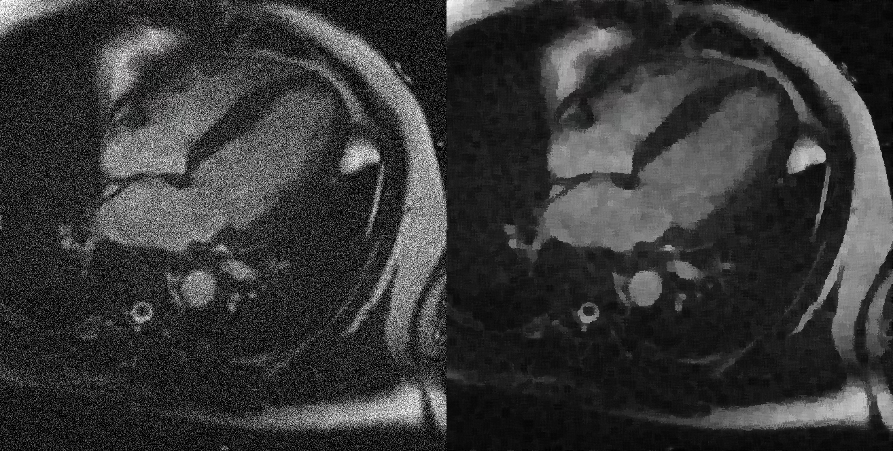

In the 1970s Michiyoshi Kuwahara worked on developing medical imaging of dynamic heart muscle. The created images would come out with a lot of noise. He devised his image smoothing technique designed to reduce noise while preserving edges.

How it works
The Kuwahara filter is a non-linear smoothing filter that works by examining a square region around each pixel and dividing it into 4 overlapping sub-regions.
For each sub-region, it calculates:
Average intensity (mean value)
Standard deviation (variation)
Then it assigns the pixel the average value from the sub-region with the lowest standard deviation – which is the smoothest region.
Mathematical Breakdown
1. Mean of a region \( S_k \):
\[
\mu_k = \frac{1}{N} \sum_{(x, y) \in S_k} I(x, y)
\]
What this means:
\( S_k \): The k-th subregion (e.g., top-left, bottom-right quadrant).
\( I(x, y) \): Intensity or color value at position (x, y).
\( N \): Total number of pixels in region \( S_k \).
\( \mu_k \): The average (mean) intensity in region \( S_k \).
This equation gives you the “average color” of that region. If all pixels are similar, the mean is a good representation of the region.
2. Variance (used to compute standard deviation) of region \( S_k \):
\[
\sigma_k^2 = \frac{1}{N} \sum_{(x, y) \in S_k} (I(x, y) - \mu_k)^2
\]
What this means:
\( \sigma_k^2 \): Variance of region \( S_k \).
\( (I(x, y) - \mu_k)^2 \): Measures how different each pixel is from the region's mean.
This equation tells us how much the intensities vary in that region. Lower variance = smoother region = fewer edges or noise.
3. Final output value for the pixel:
\[
I_{\text{filtered}}(x, y) = \mu_{k^*}, \quad \text{where } k^* = \arg\min_k \sigma_k^2
\]
What this means:
\( k^* \): Index of the region with the smallest variance (i.e., the smoothest).
\( \mu_{k^*} \): Mean value of the smoothest region.
\( I_{\text{filtered}}(x, y) \): Final output pixel value after filtering.
The filter picks the region with the lowest variation and uses its average value as the new pixel color. This keeps smooth areas smooth while protecting edges.
Filtered – unfiltered image comparison:
The Blockiness Problem
In the Kuwahara filter, all pixels in a region are treated equally when computing the mean and variance.
This means that pixels near the edge of a region contribute just as much as those near the center.
As a result, the filter may produce visible "blocky" artifacts – especially around edges or in areas of subtle detail – due to the sharp transition between regions.
Generalized Kuwahara Filter
The Generalized Kuwahara Filter (GKF), introduced by Giuseppe Papari and his team, improves upon the original version by reducing blocky artifacts through several key changes:
Uses a circular region around a pixel instead of a square one.
Divides it into 8 overlapping sectors.
Applies Gaussian weighting to prioritize pixels near the center.
Chooses the region with the lowest weighted variance to determine the final pixel value.
Mathematical Breakdown
1. Gaussian Weight Function:
\[
w(x, y) = \exp\left(-\frac{(x - x_0)^2 + (y - y_0)^2}{2\sigma^2}\right)
\]
What this means:
\( (x_0, y_0) \): Center pixel being processed.
\( w(x, y) \): Weight based on distance from the center.
\( \sigma \): Controls the spread of the weights.
Gives more importance to pixels near the center → smoother result.
2. Weighted Mean of a Sector \( S_k \):
\[
\mu_k = \frac{\sum_{(x, y) \in S_k} w(x, y) \cdot I(x, y)}{\sum_{(x, y) \in S_k} w(x, y)}
\]
What this means:
\( I(x, y) \): Pixel intensity at (x, y).
\( w(x, y) \): Gaussian weight.
\( \mu_k \): Weighted average value for sector \( S_k \).